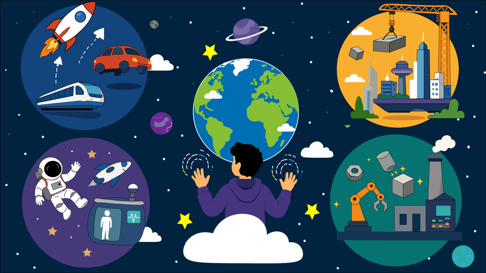

EXPLICACIÓN
¿QUE PASARIA?
Podríamos aumentar o disminuir el peso de los objetos y cambiar la manera en que se mueven.
También podríamos modificar las órbitas de satélites y cuerpos celestes. Al cambiar la gravedad,
variarían fenómenos como la presión de los gases y líquidos, afectando procesos físicos y químicos
en la Tierra. Sería una capacidad que transformaría completamente la exploración espacial y nuestra
forma de interactuar con el entorno.

Control de la gravedad